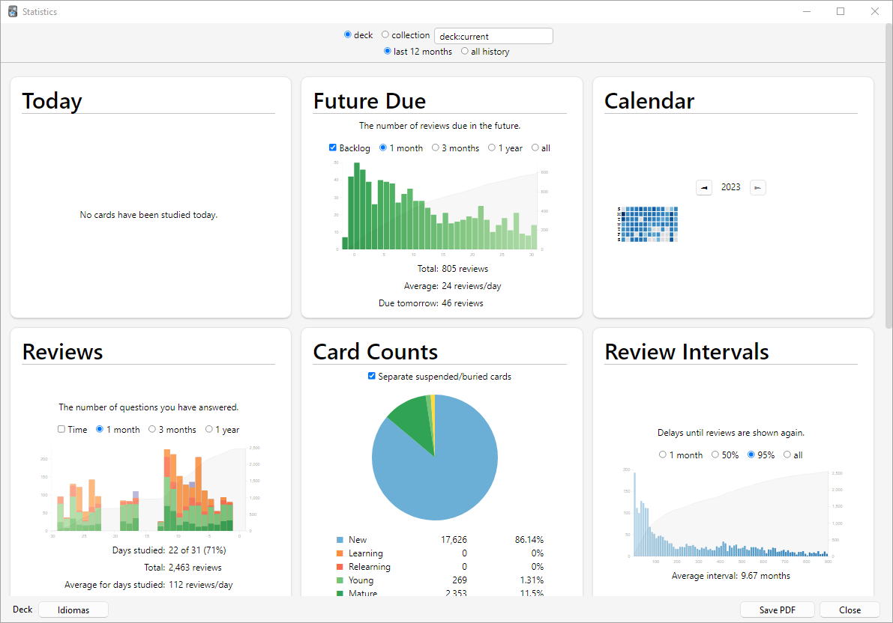

カード情報、グラフ、統計
カード情報
カード>情報メニューアイテムを使用するか、カードを右クリックして情報を選択するか、学習画面でIを押すことで、カードに関する情報を表示できます。

いくつかの注記：
位置
他の新しいカードに対する相対的なカードの表示順を示します。位置はブラウザで変更できます。カードが学習されると、カードが手動で再び新しいカードにリセットされない限り、位置は使用されません。
間隔
1つの復習から次の復習までの遅延。時間は短縮されています。「0s、1m、3h、4d、5mo、6y」は、それぞれ秒、分、時間、日、月、年を指します。
易しさ
復習カードに「良い」ボタンで答えたときに間隔が成長するおおよその量。
下部セクションは、カードの復習履歴を示します。評価はボタンを示します（1 = もう一度、4 = 簡単）。「リセット」または「期日を設定」アクションを使用してカードを手動で再スケジュールすると、タイプは手動としてリストされ、評価は0になります。
統計
統計ウィンドウは、メインウィンドウの上部にある統計ボタンをクリックするか、Tを押すことでアクセスできます。

デッキ/コレクションの選択
デッキ
デフォルトでは、統計ウィンドウは現在選択されているデッキとそれに含まれるサブデッキの統計を表示しますが、画面上部のテキストボックスに名前を入力するか（Anki 2.1.61以降）、下部のデッキセレクターを使用して、コレクションから任意のデッキを選択できます。
コレクション
このチェックボックスを選択すると、コレクション全体の統計が表示されます。上部の検索ボックスにフィルターを追加することで、任意の検索のグラフを表示することもできます（2.1.28以降）。
履歴
デフォルトでは、Ankiは過去12か月の統計を表示します。 上部で、これをすべての履歴範囲またはデッキ寿命範囲に変更できます。（上部の「今日」セクションは、もちろんこの選択の影響を受けません。）
その他
-
下部の「PDFを保存」をクリックすると、統計のPDFドキュメントがデスクトップ上のファイルに保存され、他の人と統計を共有しやすくなります。
-
ノートを削除しても、その復習履歴はAnkiに保持されます。特定のデッキの統計を見るときには含まれません（Ankiは削除されたカードがどのデッキに属していたかを知る方法がないため）が、コレクション全体の統計を見るときには含まれます。
-
Anki 2.1.28以降では、再設計されたグラフが導入されました。古いグラフは、統計ボタンをShiftクリックすることでまだアクセスできます。
今日
統計ウィンドウの上部には、今日完了した復習に関する簡単なテキスト統計のリストがあります。この文脈での「復習」は「カードの1回の回答」であるため、カードを複数回見る必要がある場合は複数の復習としてカウントされ、学習カードの回答も「復習」としてカウントされます。意味がすぐに明らかではない可能性があるいくつかの統計：
もう一度の回数
これは失敗した復習の数です（つまり、もう一度を押した）。その後にリストされる正解率は、失敗「しなかった」カードの数を学習したカードの総数で割ったものです。
学習、復習、再学習、フィルター
学習カード、復習カード、再学習カード、または期限でないときにフィルターデッキで学習されたカードの復習数。
現在の日の統計は、学習の進歩の良い全体的な指標ではありません。誰もが悪い日と良い日があり、特定の日に正解率が低くなったことは心配の原因ではありません。より長い期間を考慮に入れる残りの統計は、パフォーマンスに基づいて学習習慣やスケジュール設定を変更しようとする場合に、より有用な情報を提供します。
「今日」の統計は、ウィンドウの下部で選択された期間の影響を受けません。
グラフ
将来の期限
このグラフは、新しいカードを学習せず、カードを失敗しない場合に、将来の特定の日に期限となる推定復習数を示します。バーと左軸は、毎日すべてのカードを学習する場合の各日の期限カード数を示し、灰色の陰影領域と右軸は、それまでまったく学習しない場合のその日の期限カード数を示します。予測グラフは現在期限超過の復習をカウントしないため、大きなバックログがある場合、期限超過のカードは表示されません。
日次負荷は、毎日復習されるカードの平均数の推定値です。 バックログがない場合、日次負荷は期限カードの数とほぼ等しくなるはずです。
次のように計算されます：
$$ \frac{1}{I_1} + \frac{1}{I_2} + \frac{1}{I_3} + \dots + \frac{1}{I_n} $$
ここで、\(I_n\)はn番目のカードの間隔です。間隔が1日未満の場合、合計項は1です。これにより、短い間隔のカードが日次負荷の値を非現実的に歪めるのを防ぎます。
例：間隔が10日のカードと間隔が50日のカードがあります。 日次負荷 = \(\frac{1}{10} + \frac{1}{50} = 0.12\)、つまり_平均して_1日あたり0.12枚の期限カードがあります。
カレンダー
このグラフは、過去のカード復習活動を示します。特定のアイテムにマウスを合わせると、その日に行われた改訂の数を表示できます。曜日をクリックして、それを開始日にします。
復習
このグラフは、実行したカード復習の数をカウントします。バーは、画面下部で選択した期間に応じて、日、週、または月に対応する場合があります。異なる色のブロックは、各日に答えたカードのうち何枚が成熟、若い、再学習、または学習カードだったかを示します。期限でないときにフィルター/詰め込みデッキで答えられたカード用の別のグループもあります。灰色の陰影領域と右軸は、グラフ全体で時間が進むにつれて各タイプの復習の累積合計を示します（0日では、グラフに表示される全期間の数が表示されます）。
カード数
この円グラフは、デッキまたはコレクションの何パーセントが成熟、未見、若い/学習、および保留カードで構成されているかを示します。より正確なパーセンテージを計算したい場合、キーは各セクションの正確なカード数を示し、カードの総数が横に表示されます。
復習時間
このグラフは復習回数とまったく同じように機能しますが、答えたカードの数ではなく、各カードに費やした時間を扱います。
復習間隔
このグラフは、特定の間隔（2つの復習間の遅延）を持つカードの数を表示します。灰色の陰影領域と右軸は、その時点以下の間隔を持つカードの割合を示します。時間範囲は、他のグラフとは異なる効果をこのグラフに与えます：どのカードまたは学習期間が含まれるかを変更するのではなく、間隔がどこまで表示されるかを制限します（たとえば、14か月の間隔は1年のグラフにはまったく表示されません）。
カードの易しさ
このグラフは、特定の易しさ係数を持つカードの数を示します。 選択したデッキ/コレクションの平均易しさもここに表示されます。
カードの安定性
FSRSが有効な場合のみ表示されます。安定性は、想起の確率が100％から90％に減少するのに必要な時間の量として定義されます。
カードの難易度
FSRSが有効な場合のみ表示されます。難易度は、各復習後にカードの間隔がどれだけ速く成長するかを決定します。
カードの検索可能性
FSRSが有効な場合のみ表示されます。「検索可能性」は「想起の確率」と同義です。
推定総知識は、現在覚えている可能性が高いカードの総数で、平均検索可能性に少なくとも1回復習されたカードの数を掛けて計算されます。
時間別内訳
このグラフは、特定の時間に合格した総復習の割合を示します。
- x軸（下）：時刻（特定の時間）。
- y軸（右）：学習したカードの量。
- 副y軸（左）：成功率（パーセント）。
青いバーは、その時間に行った復習の数を示します（結果がどれほど重要かがわかるように）。灰色の陰影領域は、その時間に合格した（つまり、_もう一度_を押さなかった）総復習の割合を示します。
解答ボタン
このグラフは、学習/新規、若い、成熟カードを学習している間に、もう一度、難しい、良い、または簡単ボタンを何回選択したかを示します。Ankiは、各タイプのカードの正解復習の割合も表示します。
真の保持率テーブル
このテーブルは、異なるカードと異なる時間枠での保持率を示します。 カードは、間隔が21日以上の場合「成熟」と定義されます。1日に1回の復習（最初のもの）のみがカウントされます。 もう一度は「失敗」としてカウントされ、難しい、良い、簡単は「合格」としてカウントされます。 このテーブルは、Ankiの間隔反復アルゴリズムがどれだけうまく機能しているかを確認するために使用できます。
FSRSを使用している場合、真の保持率は望ましい保持率に近いことが期待されます。 1日のデータはノイズが多いため、月次データを見る方が良いことに留意してください。真の保持率が望ましい保持率とうまく一致しない場合、一般的な推奨事項は次のとおりです：
- FSRSパラメータを最適化する。
- 異なる素材に対して独自のパラメータを持つ異なるプリセットを使用する。
- リーチを保留/再定式化する。
- 意図したとおりに解答ボタンを使用していることを確認する。
手動分析
Ankiが提供するもの以外の統計から情報を取得することに興味がある場合は、データに直接アクセスすることが可能です。 関連する複雑さのため、これは私たちがサポートを提供できるものではありません。
1つのオプションは、統計ウィンドウに別のグラフまたは詳細を追加するアドオンを作成することです。AnkiWebにはすでにこの種のアドオンがいくつかあり、それがどのように機能するかのアイデアを得るために見ることができます。
より強力でより複雑なオプションは、Ankiのデータベースから復習ログ情報を直接抽出し、外部プログラムで分析することです。AnkiはSQLiteと呼ばれるデータベース形式を使用しています。SQLiteデータベースを操作するための多くのツールが利用可能です。最も簡単に始められるものの1つはSQLite Browserと呼ばれ、データベースを見回したり、別のプログラムにインポートするためのテーブルのCSVバージョンをエクスポートしたりできます。
統計にとって最も重要なテーブルは「revlog」テーブルで、実行した各復習のエントリを保存します。列は次のとおりです：
id
復習が実施された時刻。1970年1月1日の午前0時UTCから経過したミリ秒数として。
（これは、ミリ秒ではなく秒単位の場合、「Unix エポック時間」として知られることがあります。）
cid
復習されたカードのID。この値を「cards」テーブルのidフィールドで検索して、カードに関する詳細情報を取得できますが、revlogエントリが記録されたときと検索しているときの間でカードが変更されている可能性があることに注意してください。これは、カードの作成時刻のミリ秒タイムスタンプでもあります。
usn
この列は、復習の同期状態を追跡するために使用され、分析に有用な情報を提供しません。
ease
復習の最後に押したボタン（1はもう一度、4は簡単）。
ivl
復習後にカードがプッシュされた新しい間隔。正の値は日単位です。負の値は秒単位です（学習カードの場合）。
lastIvl
復習前のカードの間隔。初めて導入されたカードは、もう一度の遅延に等しい最後の間隔を持ちます。
factor
カードの新しい易しさ係数（パーミル（千分率））。易しさ係数が2500の場合、次に良いを押すとカードの間隔は2.5倍になります。
time
易しさボタンを選択する前に、カードの質問側と解答側に費やした時間（ミリ秒単位）。
type
これは学習カードの場合は0、復習カードの場合は1、再学習カードの場合は2、早期の「詰め込み」カード（期限でないときにフィルターデッキで学習されているカード）の場合は3です。